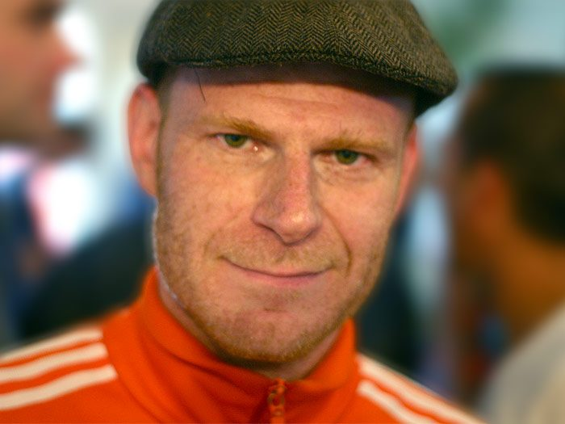

Junkie XL [Audio]: Addicted to the studio



STREAMING AUDIO INTERVIEW
Having helped some of the dance scene’s biggest names across his production career – including Tiesto, Sasha and Sander Kleinenberg – Dutchman Tom Holkenborg (aka Junkie XL) has proven he has the Midas touch when it comes to studio work. Currently based in Venice, Italy, Tom is also a regular to Los Angeles, where he’s kept himself busy over the past few years lending his talents to soundtrack work for countless films and video games.
No stranger to the commercial spotlight, Junkie XL topped the charts in 2002 with his remake of the Elvis classic ‘A Little Less Conversation’. He’s also added his unique remix touch to everyone from Avril Lavigne and Britney Spears, to the Scissor Sisters, Justin Timberlake and even German industrial-metal band Rammstein. Presently focusing his attentions on finishing a new album, ‘Booming Back At You’, which is scheduled for release in early 2008, he’s squeezing in a quick Australian visit over the coming weeks. ITM caught up for a chat.
Junkie XL plays live shows around the country, don’t miss out!
Oct 26 – Bedroom, Gold Coast
Oct 27 – Frisk, Perth
Nov 2 – The Met, Brisbane
Nov 3 – Renaissance, Sydney
Nov 4 – LadyLux, Sydney
Nov 5 – Renaissance, Melbourne
Check this clip of Junkie XL doing his thing live at the Ultra Music Festival in Miami, earlier this year: